Tier List
Drag, rank and crown a winner with capture-ready software cards.
Open Tier List↗
Production graphics suite
Fast, repeatable graphics for Gaming Careers videos—built for 4K capture, precise iteration and fewer reasons to put off the edit.
Drag, rank and crown a winner with capture-ready software cards.
Open Tier List↗Build platform-faithful comment compositions and export genuine alpha.
Open Social Comments↗Turn performance results into polished, animated broadcast graphics.
Open Benchmark Charts↗